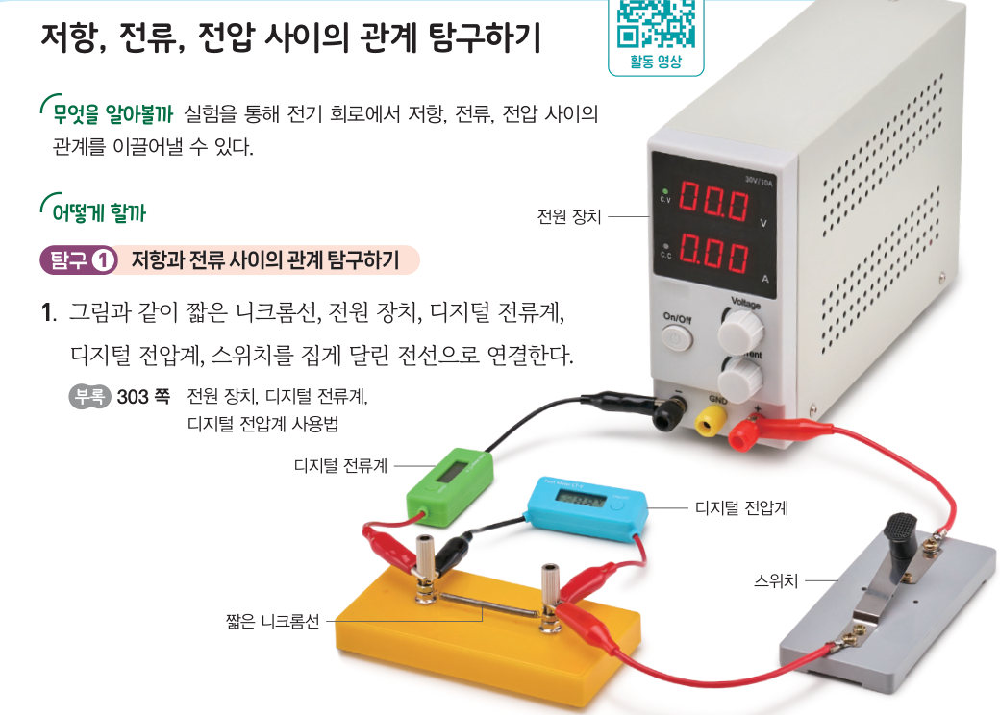

가변 저항을 돌려 전압을 바꾸면서 저항에 흐르는 전류를 아두이노로 재어 보자. 전압–전류 그래프의 기울기로 저항을 구하고, 저항을 직렬·병렬로 연결했을 때 전체 저항이 어떻게 달라지는지 확인해요.
준비물 아두이노 UNO, USB 케이블, 브레드보드, 가변 저항(10 kΩ), 저항 1 kΩ 2 개(하나는 기준 저항, 하나는 저항 A), 220 Ω 저항(저항 B), 점퍼선, 노트북(크롬)
| 부품 | 연결 |
|---|---|
| 가변 저항(10 kΩ) | 양쪽 다리 → 5V, GND / 가운데 다리 → A0 (전원 전압) |
| 측정할 저항 Rx | 가변 저항 가운데 다리 ↔ 브레드보드 한 줄(이 줄을 A1에 연결) |
| 기준 저항(1 kΩ) | A1 줄 ↔ GND — 여기에 걸리는 전압으로 전류를 계산해요 |
코드를 불러오는 중…
| 측정 대상 | 기록 수 | 계산한 저항(kΩ) |
|---|---|---|
| 저항 A (1 kΩ) | 0 | |
| 저항 B (220 Ω) | 0 | |
| A와 B 직렬 | 0 | |
| A와 B 병렬 | 0 |
| 평가 항목 | 스스로 평가 |
|---|---|
| 회로를 바르게 연결하고 전압과 전류를 여러 번 측정했다. | |
| 그래프를 해석하여 옴의 법칙과 저항의 연결에 따른 특징을 설명했다. | |
| 역할을 나누어 협력하며 안전하게 실험했다. |